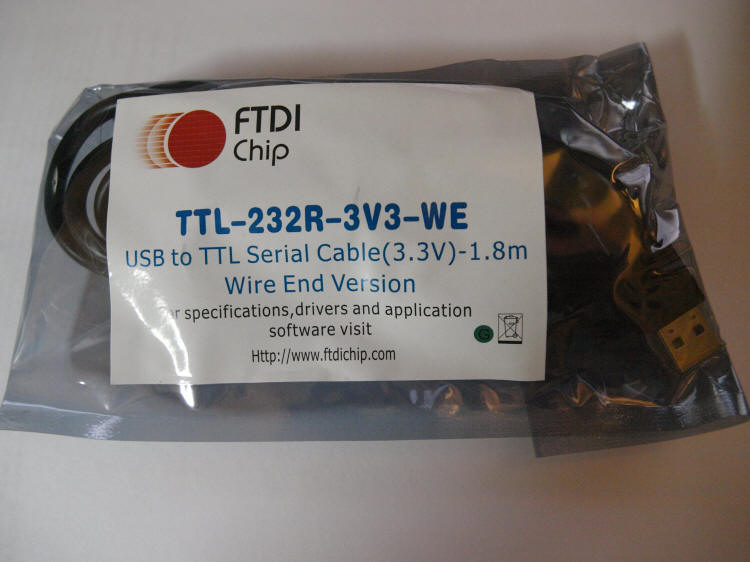
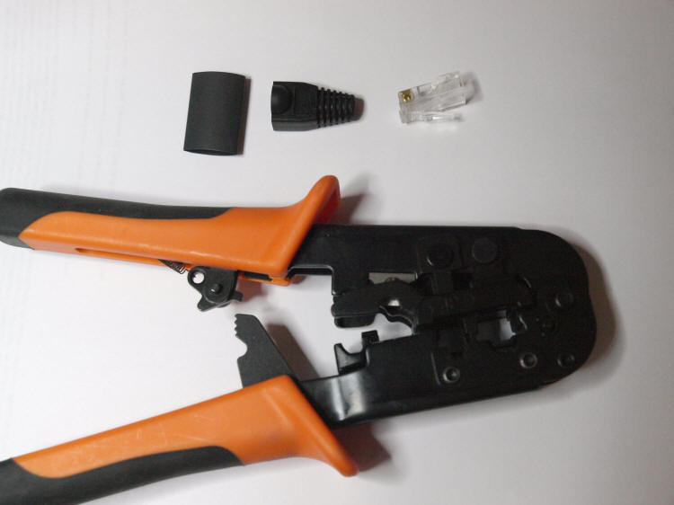

1. This page will teach you how to make a cable that can safely be
connected to the Feature port of the Gemini-2 telescope controller.
This cable will provide a USB to Serial virtual port into your computer.
There are drivers for many different operating systems available.
See
http://www.ftdichip.com/Drivers/VCP.htm for the different drivers,
including MAC OSX, Windows, Windows 8.1 and Linux.
2. The other thing this cable can be used for is to replace
the boot-loader of the main processor if anything goes really wrong, and
it seems like the Gemini-2 has died. now 99.9% of the time it is not the
boot-loader but the micro-SDcard format messed up, and this cable will
not fix that. So don't make the cable just for that reason, this is just
added information about what this cable can be used for. |
The cable you are going to need has a part number TTL-232R-3V3-WE.
I got mine from
Mouser Electronics at a cost of $20.00 USA plus shipping. The data
sheet is available
here. You can find other sources from the search engine
http://www.findchips.com |

The package as it arrived from Mounser, nicely sealed in anti-static packaging. |

Cable removed from package |
There is two different ways shown to make this cable.
- Crimp a RJ45 on the end of it.
- Use a RJ45 to screw Terminal adapter.
|
This is the Crimp a RJ45 connector on the end.
|

There are the item you will need to put the cable together.
|
Items you will need.
- RJ45 Cat6 connector. I used the EZ-RJ45 Cat6 from Platinum Tools
available at
Show Me Cables The use of Cat6 connectors is necessary
because of the wire size from the FTDI cable is too large to fit into
Cat5E connector. Here is a
video of how the EZ-RJ45 works to give you some idea of how to
put the 3 wires into the RJ45 connector.
- RJ45 crimper.
- small wire cutters.
- Possibly heat shrink.
-
RJ45 Boot
from Show Me cables
We will use the colored wire table from the FTDI document to determine how to wire the cable.
|

 |
|
|
-
First cut off the silver tinned part of the wires unless you are using
the EZ-RJ45 connectors. The cable that goes into the RJ45 has the conductor on them.
-
Slip the RJ45 protective cover and head shrink over the wire if you
decide to use them (optional)
-
Cut off just enough of the Black, Yellow, and Orange wire to make
sure they are the same length.
-
Arrange the wire in Black, Orange, and Yellow order and slip them
completely in the RJ45 connector all the way. If you are using
the EZ-RJ45 connectors, put the wire in till all the tinned part of
the wire exits the front of the connector with a little insulation
sticking out also.
-
Slip the heat shrink all the way until some of it is in the RJ45
connector. See Gold Pin Side up picture below.
-
Crimp the connector with RJ45 crimpers.
-
If you used the EZ-RJ45 connector, use a hobby knife to trim off the
excess sticking out the front of the connector. No wire or
insulation should be sticking out.
-
Use a Heat Gun to shrink the heat shrink tubing.
-
Slide the protective boot into place.
|

Gold Pin side up |
You now have completed the cable. Follow
the instructions given at the
http://www.ftdichip.com/Drivers/VCP.htm
for which ever driver you are going to use. For Windows drivers I
suggest the "Setup Executable" link show on the right side of the page.
You run this before plugging in the the cable. If you are using
any other driver, download that driver and unzip it to a empty
directory. When you plug in the USB cable follow the prompts
given to install the driver.
You will also have to enable the pins of the feature port
for the Gemini to see this cable.
Go into the Web interface, and go to the Battery/Ports page. At the
bottom Click the F5 and F4 Port F Pins boxes. (they are numbered
binary so F5= Pin 6 and F4 = Pin 5.) On the Serial Port Setting page,
you can set the baud rate to what ever you want.
|

|
You will need to set the desired baud rate for the Serial Port on the Web interface
Serial Port
page. I have tested this cable from my laptop into the ASCOM
Gemini.net driver running at 57900 baud and it seemed to work fine.
However if you use it into a USB hub with a very long run, then you
might want to use a slower baud rate.
|